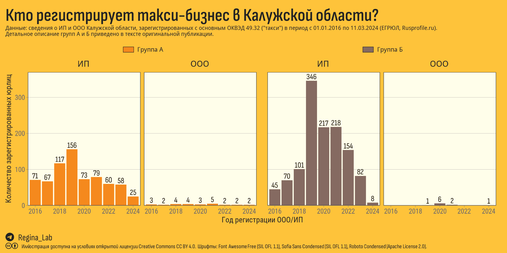
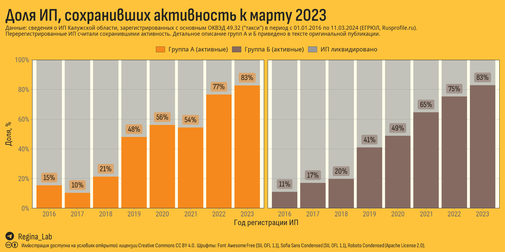
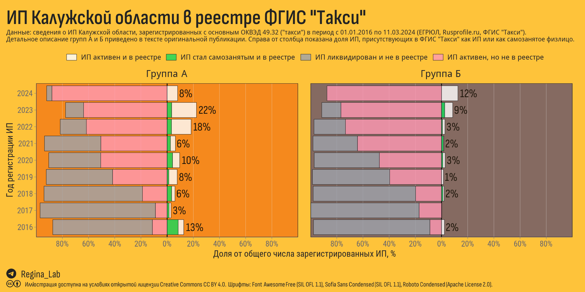

Анализ 1890 ИП и ООО, зарегистрированных в Калужской области в период с 01.01.2016 по 11.03.2024 года с указанием ОКВЭД 49.32 (такси) в качестве одного из основных. На основании анализа фамилии, имени и отчества ООО и ИП были разбиты на 2 группы - А (типичные для Калужской области ФИО) и Б (остальные ФИО). Для обеих групп построены кривые выживаемости и показано отражение в федеральном реестре такси (ФГИС “Такси”).
В последний год в ТГ-каналах Калужской области стало появляться всё больше жалоб на поведение “новых” таксистов. Видео мы рекламировать не будем, но в летописях потомки прочтут что-то вроде…
В преддверии профессионального праздника (22 марта отмечается Международный день таксиста) мы решили разобраться с тем, как в Калужской области обстоят дела с этим самым частным извозом.
Мы смогли найти и собрать сведения о регистрации с 2016 года по н.в. ООО и ИП, которые в перечне основных ОКВЭД указали 49.32. (деятельность легкового такси и арендованных легковых автомобилей с водителем), всего – 1984. Некоторые ИНН присутствует в полученном массиве несколько раз по причине ликвидации и повторной регистрации ИП, всего уникальных ИНН – 1890.
Конечно, это капля в море по сравнению с 25 тысячами, которые согласно публичным оценкам официальных лиц зарегистрированы на платформах агрегаторов.
Во-первых, в собранный нами массив не попали самозанятые физлица, работающие через агрегаторов или посредников. Сведения о самозанятых нам не доступны, да и к тому же они не указывают ОКВЭД.
Во-вторых, есть ООО и ИП, у которых 49.32 не включен в основные ОКВЭД.
Будем считать, что собранные нами сведения отражают тех, кто принял решение заниматься такси как основным видом деятельности от своего лица.
Публичные сведения о регистрации не содержат указаний о порядке получения гражданства индивидуальными предпринимателями, поэтому разделить владельцев и руководителей такси-сервисов на “местных” и “приезжих” не получится. Но, как известно, в Калужской области примерно 90% населения – славяне, поэтому мы будем считать, что для коренных жителей Калужской области характерны русские личные имена, которые имеют греческое, еврейское, славянское, скандинавское, латинское и германское происхождение. Если такие имена мы отнесем в группу А, то всех остальных (группу Б) можно будет считать “приезжими”. Такой подход можно использовать, чтобы оценить изменение деловой активности местных и приезжих жителей Калужской области.
ВАЖНО! Предлагаемая методика НЕ подразумевает дискриминации представителей какой-либо из групп. Методика используется исключительно для изучения трудовой миграции на основании публично доступных сведениях об ИП и руководителях ООО (ЕГРЮЛ) и не подразумевает дальнейшее распространение обработанных данных.
Очевидно, что в группе А могут оказаться потомки вятичей с такими убеждениями, за которые в средние века выгоняли за городские стены, а в группе Б – люди, которые, несмотря на происхождение фамилии мыслят, говорят и чувствуют на русском языке, как на родном. Данная методика не используется нами для рассмотрения отдельных граждан, но позволяет определить применять формальные критерии для выделения групп и наблюдать за их динамикой по годам.
Методика отнесения ФИО к группам:
каждому имени и отчеству присваивали балл – 1 (русские имена), 0 (иные имена) или 0.5 (имена, которые имеют широкое распространение как среди русских, так и среди других национальностей, например, Руслан, Булат или Эльвира);
происхождение фамилии менее очевидно, поэтому авторы его определяли по своему усмотрению и только для фамилий с очевидным происхождением. Если в основе фамилии лежит корень русского слова, фамилию считаем русской и присваиваем ей 1 балл (примеры – Вознесенская, Богатырёв, Ножкин, Дубкова и т.д.). Очевидным не-русским фамилиям присваивали 0. Некоторым фамилиям балл не присваивали в силу невозможности определения их точного происхождения (например, Акоев или Якубов);
присвоение баллов проводили раздельно для фамилий, имен и отчеств, чтобы полная комбинация (ФИО) не влияла на решение (т.е. одно и то же имя или отчество всегда получают одинаковый балл вне зависимости от других частей полного имени);
баллы, присвоенные фамилии, имени и отчеству, усреднялись. Например, для Льва Николаевича Толстого итоговый балл был бы равен (1+1+1)/3 = 1; для Камилы Валерьевны Валиевой – (0.5+1+0.5)/3 = 0.67. Такой подход позволяет ФИО смешанного происхождения относить к группе А или к группе Б по преобладающим признакам;
ФИО, для которых средняя оценка была выше 0.5, были отнесены к группе А, остальные – к группе Б.
Таким образом, используя общедоступные словари личных имен мы смогли разделить ФИО собранных нами регистрантов в калужском такси-бизнесе (для ООО использовали фамилию руководителя) на 2 группы. Теперь мы можем сравнивать значения показателей для групп А и Б, и на основании их изменения делать предположения об изменении деловой активности представителей групп.

в 2019 в Калужской области резко вырос объем регистраций ИП. Количество новых ИП в группе А в 2019 годы выросло более чем в 2 раза по сравнению с 2016 (156 vs. 71), в группе Б – в 7 с половиной раз (346 vs. 45);
с 2020 года поток новых ИП в группу А стабилизировался (немного снизился), в группу Б – снизился почти в 3 раза (с 217 до 82).
Каковы причины наблюдаемого скачка и последующего снижения в 2020-2021 году?
Наиболее вероятными кажутся 2 объяснения:
С 2019 года на территории Калужской области был запущен пилотный проект с особым налоговым режимом для самозанятых. Согласно ФЗ (ч. 1 ст. 9 Федерального закона №69) самозанятые физические лица не могли самостоятельно работать в такси, но могли сначала оформить ИП, а потом перейти на режим самозанятости;
После пандемии люди начали возвращаться в общественный транспорт, рынок ответил падением спроса, конкуренция выросла и привлекательность “такси-перевозок” для новых предпринимателей вернулась к прежнему уровню.
Вероятно, обе причины имели место.
Предположение о насыщении рынка можно проверить, взглянув на время жизни зарегистрировавшихся ИП – если большая часть новых перевозчиков закрепилась на рынке и до сих пор работают, возможно, предложение действительно избыточно.
На иллюстрации ниже светло-серым цветом (верхняя часть столбца) показана доля ИП, которые был ликвидированы (без регистрации нового ИП). Можно видеть, что на водителей групп А и Б, очевидно, действует одни и те же “законы”.

Как видим, выживаемость новых ИП на рынке такси не так уж высока. Около половины ИП, созданных 3-4 года назад, к настоящему моменту ликвидированы, из зарегистрированных в 2018 по данным ЕГРЮЛ ликвидированы, в среднем, 4 из 5 ИП (80%).
Конечно, мы не знаем об истинных причинах ликвидации и, наверное, мы бы погадали о причинах тех событий, но тут появились новые…
С 01 сентября 2023 года действует ФЗ “О регулировании перевозок легковыми такси”, которые открывает самозанятым возможность работать в такси без необходимости регистрации ИП и без посредников.
Вместе с такой привилегией новый закон устанавливает ряд дополнительных требований, среди которых:
регистрация машины в реестре транспортных средств
регистрация перевозчика в реестре перевозчиков
Сначала были региональные реестры. На странице старого портала Правительства КО пока ещё можно найти текст следующего вида Реестр выданных разрешений на осуществление деятельности по перевозке пассажиров и багажа легковым такси для граждан РФ http://62.148.142.10:1080. На ссылку можно не нажимать, сервис уже не работает, поскольку региональные реестры теперь отдают данные в ФГИС “Такси”. Последняя порадовала доступностью данных – мы, конечно, не преминули проверить отражение в нём собранных нами ИП.
Те ИП из нашего массива, которые сохранили активнось, по идее должны быть в реестре – согласно установленному порядку их должен был передать региональный реестр.
Если же предприниматель закрыл ИП, чтобы работать как самозанятое физлицо, то мы тоже должны видеть его в федеральном реестре (ФИО для самозанятых в веб-сервисе ФГИС “Такси” не отражается, а ИНН виден).
На иллюстрации ниже для ИП групп А и Б, зарегистрированных в 2016-2024 гг., показаны доли:
оставшихся в форме ИП и уже присутствующих в ФГИС “Такси”,
ликвидировавших ИП, но присутствующих в ФГИС “Такси” (в качестве самозанятого),
оставшихся в форме ИП, но отсутствующих в ФГИС “Такси”,
ликвидировавших ИП и отсутствующих в ФГИС “Такси” (серым цветом).

В группе А даже среди тех ИП, кто зарегистрировался в годы действия режима самозанятости, не более 22% присутствуют в ФГИС “Такси”. Доля не ликвидированных ИП группы А, которые отсутствуют в федеральном реестре весьма существенна!
Что касается группы Б, то там процент ИП, проявившихся в федеральном реестре, совсем низкий.
Учитывая на 90% славянское население Калужской области, соотношение численности групп А и Б, действительно, свидетельствует о чрезмерном перекосе в пользу приезжих, что в свою очередь, как любая асимметрия, негативно характеризует рынок такси.
Мы не являемся специалистами в части регулирования такси и пассажирского транспорта, поэтому сложные прогнозы делать не станем, но подметим следующее:
Большая часть перевозчиков не успели или не захотели попасть в ФГИС “Такси”. Возможно, это связано с пунктами нового закона (там что-то про локализацию парка и т.д.). Впрочем, о том, что процесс будет идти вяло руководству КО докладывали с лета 2023 года. Губернатор счел ситуацию недопустимой и поручил управлению административно-технического контроля усилить работу со службами такси.
Управление административно-технического контроля Калужской области в своём ТГ-канале теперь активно призывают водителей регистрироваться в реестре и показательно постят отчёты о совместных с ГИБДД рейдах. Процент отказа по заявлениям на получение разрешения составляет всего 2.8%.
По новому закону службы заказа такси и агрегаторы могут передавать водителю заказы только в том случае, если сведения о нём есть в реестре перевозчиков и реестре такси. Проверять водителей по реестрам службы заказа должны ежедневно.
В ближайшее время Комитет Госдумы по транспорту планирует рассмотреть поправки, предложенные ко второму чтению закона о локализации машин. Зачем и почему? См. здесь и здесь.
На regulation.gov.ru сейчас обсуждаются поправки, касающиеся страхования перевозок такси.
Для нас, независимых наблюдателей со стороны, это выглядит как новая фаза передела региональных рынков в пользу федеральных агргегаторов и дешёвой рабочей силы. Что может принести подобная либерализация рынка, было ясно ещё в 2019 году. Правила и запреты люди быстро учатся обходитьЮ тем более когда им помогают Яндекс с их программой прямого партнерства и ушлые предприниматели, оформляющие “под ключ” пакеты документов для гастролирующих водителей.
Помните, по новому ФЗ в салоне такси должны быть сведения о машине, водителе, перевозчике, номера телефонов для приёма жалоб и предложений, а также информация о тарифах. Поищите глазами QR-код, попробуйте его проверить.
Если QR-кода нет, скопируйте номер машины (это несложно сделать в приложении Яндекс Такси), перейдите на сайт ФГИС “Такси” (https://www.sicmt.ru/fgis-taksi?type=car) и проверьте присутствие ТС в соответствующем реестре.
Что делать в случае, если Вы уже в машине перевозчика, который игнорирует соблюдение Федерального закона?
Этот вопрос мы задали руководителю Управления административно-технического контроля Калужской области (ТГ-канал “Станислав Орехов информирует”) и получили следующий ответ:
Если к вам приехало нелегальное такси, вы можете отказаться от услуги этого такси, сообщить об этом в службу заказа и попросить заменить автомобиль. Также вы можете официально направить заявление с указанием нарушения и информацией об автомобиле в наше управление по адресу: г. Калуга, ул. Плеханова, 45.
Мы планируем продолжить изучение сектора такси и в следующей части погрузимся в данные о реальных поездках.
Такси Калужской области (часть 1) // Блог Regina Lab. - 2024. - URL: https://reginaobninsklab.github.io/posts/kaluga-taxi-part1/. - Дата публикации: 18 марта 2024 г.
Если не указано иное, то статья целиком и составляющие её текст, иллюстрации и данные могут использоваться на условиях публичной лицензии Creative Commons CC BY 4.0 Deed Attribution 4.0 International.
См. соответствующий раздел на странице “О проекте”.
Allaire J, Xie Y, Dervieux C, McPherson J, Luraschi J, Ushey K, Atkins A, Wickham H, Cheng J, Chang W, Iannone R (2023). rmarkdown: Dynamic Documents for R. R package version 2.22, https://github.com/rstudio/rmarkdown.
Ooms J (2023). magick: Advanced Graphics and Image-Processing in R. R package version 2.8.2, https://CRAN.R-project.org/package=magick.
Pedersen T (2024). patchwork: The Composer of Plots. R package version 1.2.0, https://CRAN.R-project.org/package=patchwork.
Qiu Y, details. aotifSfAf (2022). sysfonts: Loading Fonts into R. R package version 0.8.8, https://CRAN.R-project.org/package=sysfonts.
Qiu Y, details. aotisSfAf (2023). showtext: Using Fonts More Easily in R Graphs. R package version 0.9-6, https://CRAN.R-project.org/package=showtext.
Wickham H (2022). stringr: Simple, Consistent Wrappers for Common String Operations. R package version 1.5.0, https://CRAN.R-project.org/package=stringr.
Wickham H (2016). ggplot2: Elegant Graphics for Data Analysis. Springer-Verlag New York. ISBN 978-3-319-24277-4, https://ggplot2.tidyverse.org.
Wickham H, François R, Henry L, Müller K, Vaughan D (2023). dplyr: A Grammar of Data Manipulation. R package version 1.1.2, https://CRAN.R-project.org/package=dplyr.
Wickham H, Henry L (2023). purrr: Functional Programming Tools. R package version 1.0.1, https://CRAN.R-project.org/package=purrr.
Wickham H, Hester J, Bryan J (2023). readr: Read Rectangular Text Data. R package version 2.1.4, https://CRAN.R-project.org/package=readr.
Wickham H, Seidel D (2022). scales: Scale Functions for Visualization. R package version 1.2.1, https://CRAN.R-project.org/package=scales.
Wickham H, Vaughan D, Girlich M (2023). tidyr: Tidy Messy Data. R package version 1.3.0, https://CRAN.R-project.org/package=tidyr.
Wilke C, Wiernik B (2022). ggtext: Improved Text Rendering Support for ‘ggplot2’. R package version 0.1.2, https://CRAN.R-project.org/package=ggtext.
Xie Y (2023). knitr: A General-Purpose Package for Dynamic Report Generation in R. R package version 1.43, https://yihui.org/knitr/.
Xie Y (2015). Dynamic Documents with R and knitr, 2nd edition. Chapman and Hall/CRC, Boca Raton, Florida. ISBN 978-1498716963, https://yihui.org/knitr/.
Xie Y (2014). “knitr: A Comprehensive Tool for Reproducible Research in R.” In Stodden V, Leisch F, Peng RD (eds.), Implementing Reproducible Computational Research. Chapman and Hall/CRC. ISBN 978-1466561595.
Xie Y, Allaire J, Grolemund G (2018). R Markdown: The Definitive Guide. Chapman and Hall/CRC, Boca Raton, Florida. ISBN 9781138359338, https://bookdown.org/yihui/rmarkdown.
Xie Y, Dervieux C, Riederer E (2020). R Markdown Cookbook. Chapman and Hall/CRC, Boca Raton, Florida. ISBN 9780367563837, https://bookdown.org/yihui/rmarkdown-cookbook.